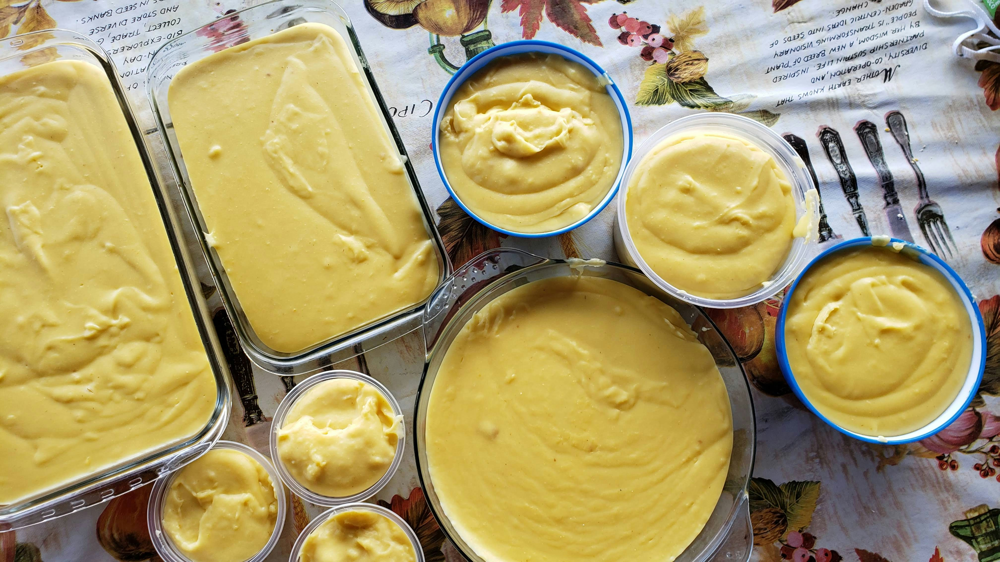

Natillas caseras
Dulce y cremoso

Ingredientes
500 ml leche
3 yemas, 60 g azúcar
Maicena y canela
Preparación
Mezclar yemas con azúcar y maicena. Añadir leche caliente y cocinar hasta espesar.
Enfriar y servir con canela.
← Volver a Postres